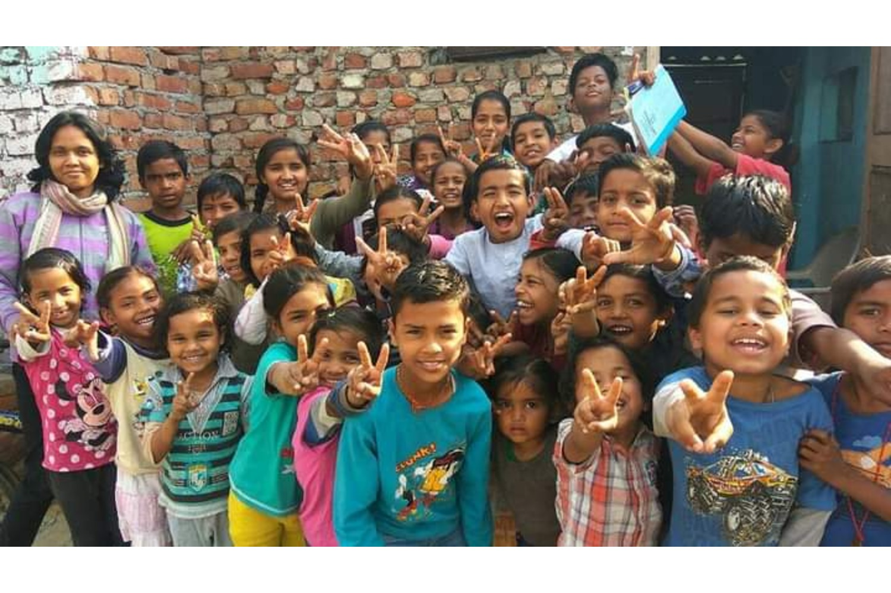

Our History
Welcome to Love You Children Mission (LYCM)!
We are a non-profit organization dedicated to transforming the lives of underprivileged children through education and opportunity. Founded in 2010, our journey began in Goyala Dairy, where we encountered heart-wrenching scenes of malnourished children running barefoot through dirt and garbage. Many teenagers were unable to read or write, lacked basic hygiene knowledge, and had limited exposure to the world beyond their slum. Today, the transformation is remarkable. Our Study Centre is alive with the energy of around sixty enthusiastic kids who are not only learning but also teaching each other. These children now dream big, aspiring to become doctors, army officers, police officers, teachers, and more. They've embraced the desire for a better life, and despite facing numerous challenges, they approach their studies with unwavering dedication. With LYCM, these children are not just learning; they are conquering their futures. Join us in making a lasting difference.
History of the Mission
Love You Children Mission (LYCM) was founded by Mr. Linos David of Delhi, inspired by his profound experience with young drug addicts. In 2010, with the invaluable support of Dr. Abraham from TML Hospital, he initiated rehabilitation efforts. Dr. Abraham emphasized the importance of early intervention, sparking the idea of a children's mission. Recognizing the challenges of rehabilitating addicted youth, Mr. David envisioned providing education and care to children from a young age, laying the foundation for LYCM. Mr. David and his family along with Aby Abraham, began their transformative work in the Goyala Dairy slum near Dwarka, New Delhi. Aby initiated classes focusing on basic hygiene and moral values. Despite initial setbacks with paid educators, real progress began when Sheeba Ma'am took charge. She started English classes, initially met with disinterest. To motivate the children, she promised gifts for good performance, which sparked significant improvement. Seeking further support, she reached out to her school friend Mrs. Nair, who generously contributed Rs 1000 monthly for gifts. Their school group also donated Rs 25,000 for learning materials, including a second-hand computer. Regular updates on social media attracted attention, leading friends to sponsor gifts and celebrate birthdays with the children. Mr. David emphasized that these gestures were rewards, not charity. As the children excelled academically, their attitudes and behaviors transformed. Mr. David extended the mission to other locations, facing challenges due to the lack of dedicated teachers and funding constraints. However, the Goyala Dairy Slum center became a beacon of success. Older children mastered tenses, demonstrating proficiency in basic English. They regularly delivered speeches on camera, showcasing their progress on Facebook. Younger children also displayed significant advancements in vocabulary, writing, reading, and speaking. The children transitioned from bored, disheveled individuals to confident, dedicated students. Love You Children Mission aims to replicate these success stories in other Indian slums, continuing its mission of transforming lives through education. Join us in our journey to make a lasting impact and inspire hope in countless young hearts.
.jpeg)

